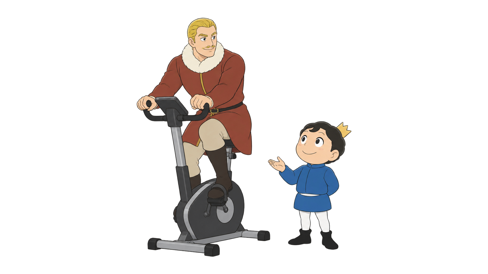
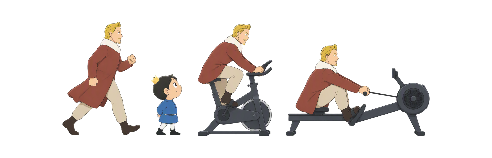
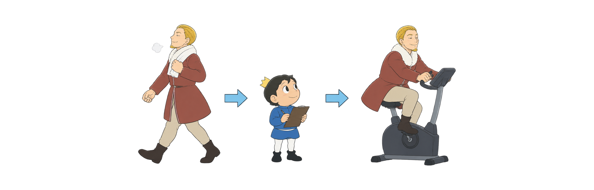
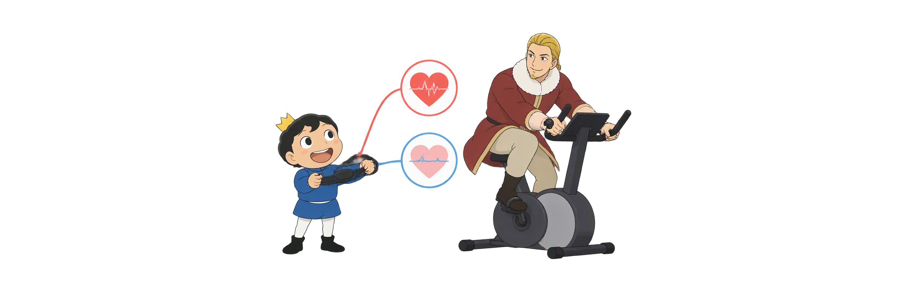
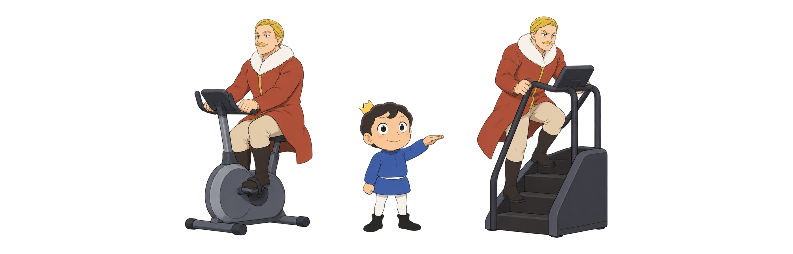
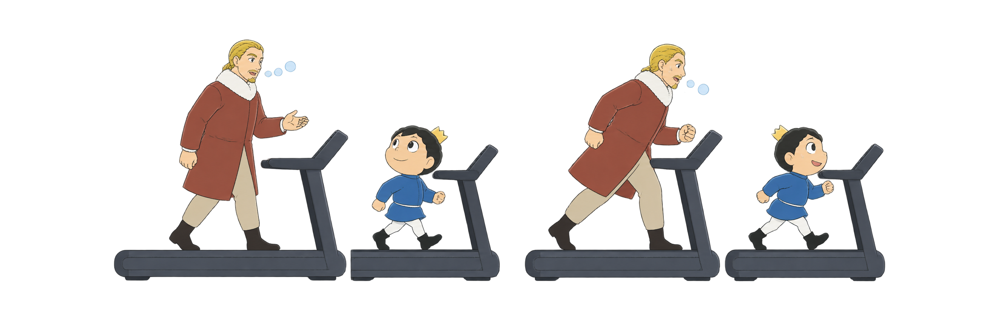
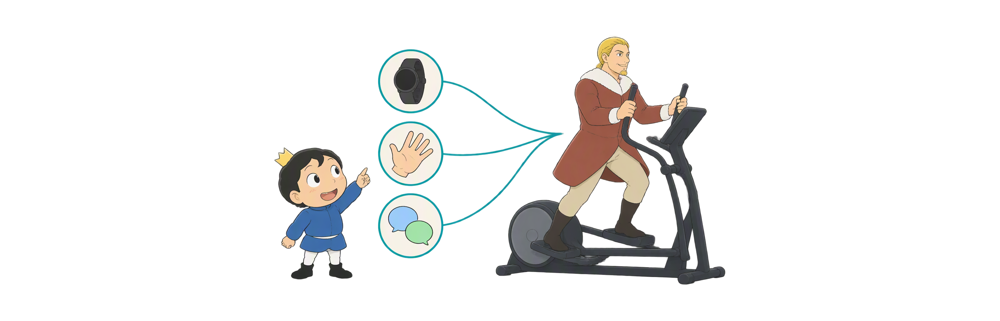

Day 50
有氧训练模式与强度监控
选适合自己的运动 看懂今天练得累不累
模式选择强度三角可持续

选适合自己的运动 看懂今天练得累不累
从选运动到看强度，先解决训练时会遇到的6个问题。
不舒服时怎么换运动
替换还是额外加练
什么时候要算目标心率
没手表也能记录累感
用一句话检查强度
读数与身体感受冲突怎么办
运动时明显不舒服、头晕或胸痛，应停止并寻求医疗评估；普通训练的数字只是参考。
先停下来看看哪里不适；如果没有持续疼痛，再考虑换一种更舒服的运动。

原计划跑30分钟，改骑30分钟是替换；跑完再骑30分钟是额外加练。

轻松活动通常不用算；按训练计划设手表提醒时，才需要分清两种算法。

给自己的累感打分：0分是休息，10分是接近最吃力。

如果今天打算轻松跑，却只能说短句，通常该放慢。

同样骑20分钟，心率和平时差不多，但更喘、说话变难，就先降低强度。
